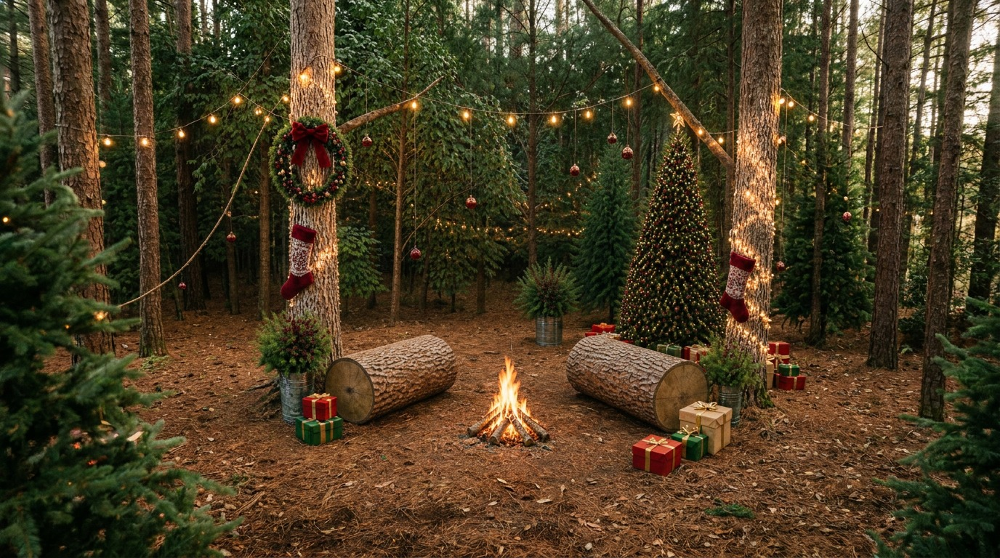
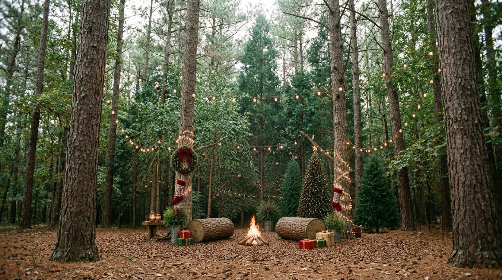
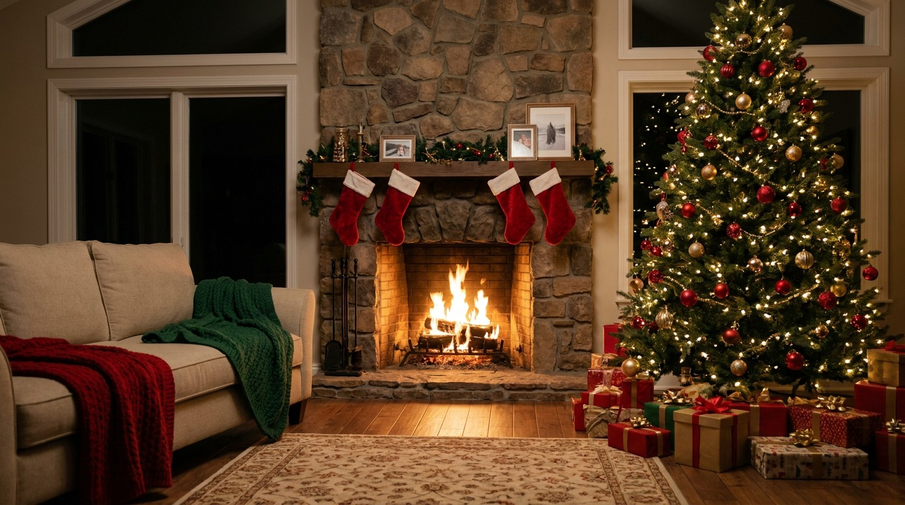
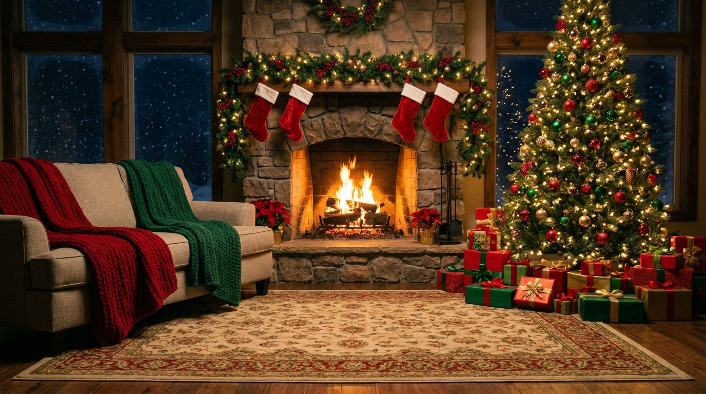

Luz, Câmera, Natal
“Eternize seus momentos em um clique.” Viva um momento de aconchego e carinho com alguém especial.
Reserve seu horário
WhatsApp: (11) 99999-9999
Uma experiência para guardar
Eternize seus momentos em um clique.
Um momento real, vivido com alguém especial, para transformar sentimentos de aconchego e carinho em memórias que ficam para sempre.

Uma campanha para mães e famílias que buscam guardar memórias especiais.
Responsáveis de 25 a 60 anos ou mais, unidos pelo desejo de registrar momentos importantes.
Famílias que querem transformar um momento real em uma lembrança duradoura.
Guardar momentos e sentir a nostalgia de reviver cada detalhe especial em família.
Eternizar algo passageiro ao lado de alguém especial, antes que o tempo transforme o momento em saudade.
Campanha
Frase da campanha
“Eternize seus momentos em um clique.”
Conceito
Criar um momento real, vivido com alguém especial, para que as memórias permaneçam para sempre.
O que a campanha transmite
Aconchego e carinho em cada fotografia.
Mais do que uma fotografia, uma lembrança afetiva para reviver com carinho e nostalgia.
Fotografias ao ar livre, em uma sala acolhedora e junto à lareira.
Verde, vermelho, bege, prata e dourado para criar um clima natalino.
Um estilo livre para que cada família possa viver e registrar seu próprio momento.
Sofá, luzes, tapete, lareira, árvores e outros detalhes que deixam o ambiente especial.
Making of, fotos Polaroid, molduras e detalhes para tornar a experiência inesquecível.



O pacote reúne uma experiência afetiva, registros especiais e lembranças para reviver por toda a vida.
Ensaio fotográfico de Natal em família.
R$ 450,00, com valor percebido como acessível e justo.
Instagram, WhatsApp, redes sociais locais e indicações.
Desconto para agendamento antecipado e campanha com chamada para reservar o dia.
Making of, fotos Polaroide, molduras e uma experiência feita para guardar.
Aconchego, afeto, nostalgia e a sensação de guardar momentos preciosos.
“Eternize seus momentos em um clique.” Viva um momento de aconchego e carinho com alguém especial.